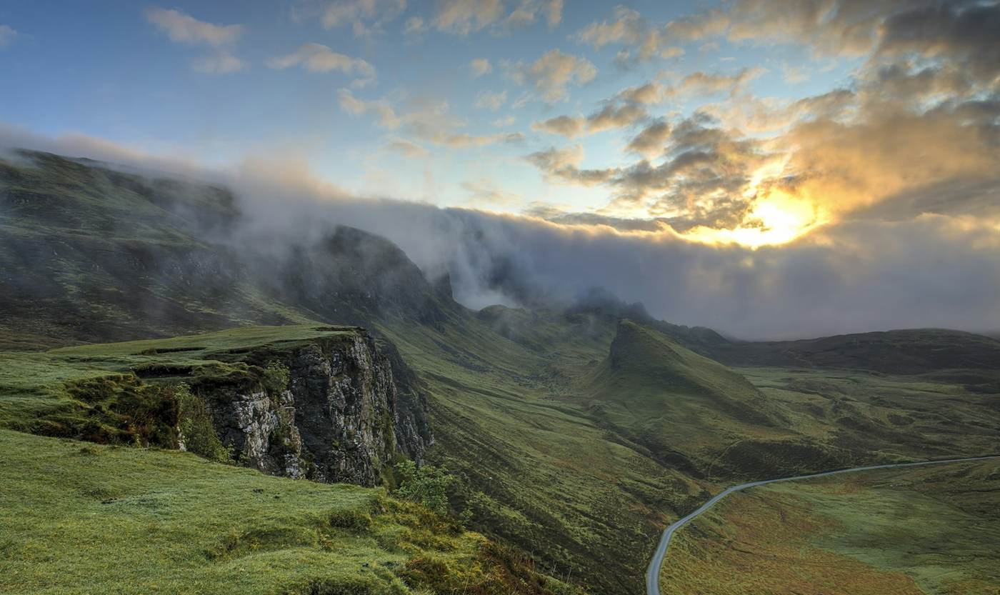

Sobre
Sempre na estrada.
Fotografia de paisagem com paciência.

A nossa história
Olá, sou o Gonçalo.
Cresci junto à serra e foi lá que comprei a primeira câmara.
Desde então já fotografei em mais de vinte países, mas volto sempre ao Gerês.
Acredito que uma boa fotografia de paisagem convida a parar e a olhar com calma.
Paciência
A luz certa vale a espera.
Respeito
Pela natureza e pelos lugares.
Partilha
Ensinar o que aprendi.